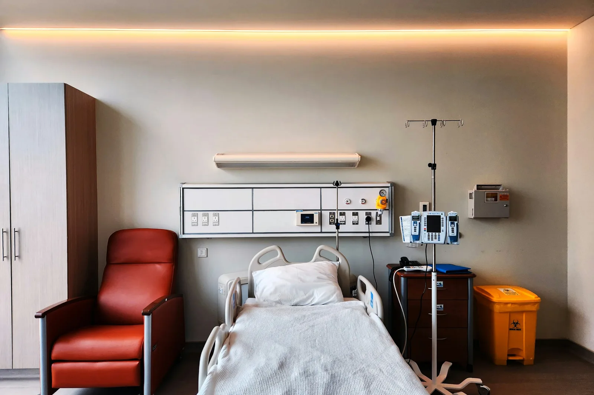

Fewer cramps and dizzy spells
Fluid is removed slowly over seven to eight hours, so blood pressure stays steadier.

Treatment
Longer, gentler dialysis while you sleep, so your days stay your own.
Who it suits
Slow overnight sessions in private sleep rooms at our Chennai centre. Longer treatment removes fluid gently, which many people find leaves them with more energy.
Longer, gentler dialysis while you sleep, so your days stay your own.
Benefits
Longer, slower sessions while you sleep, so your days are free and you feel better.
Fluid is removed slowly over seven to eight hours, so blood pressure stays steadier.
Go straight to work or home in the morning, with no daytime sessions to plan around.
Longer hours clear more phosphate and fluid, which often means fewer binders and a healthier heart.
Trained night nurses monitor every machine and a nephrologist is always on call.
How it works
Your nurse explains every step before it happens. Nothing is rushed.
You arrive in the evening and settle into a private room
A night nurse connects you at a slower blood-flow rate
Monitoring alarms are linked to the nurses' station all night
You are disconnected at dawn and can go straight to work
A typical session
Times are examples; your shift is agreed with you.
Weight, blood pressure and a warm drink.
Lights dimmed; nurse checks every hour without waking you where possible.
Gentle wake-up, post-weight and dressing.
Shower available before you leave.
Be prepared
From ₹3,400 per night
Billed per night, including the private room. Many insurers cover nocturnal sessions as standard haemodialysis.
Questions
Ask us anything else at your first visit.
Most people sleep well after the first week or two. Rooms are private, quiet and dark.
Monday, Wednesday and Friday, or Tuesday, Thursday and Saturday.
Yes. A nephrologist is on call and trained night nurses monitor every machine.
Compare
Many people change treatment over the years. We support every option.
Haemodialysis
Three calm sessions a week in a bright bay, with a nurse always within sight.
Learn about haemodialysisHome dialysis
Dialysis on your own timetable, with training and a 24/7 helpline behind you.
Learn about home dialysisPeritoneal dialysis
Needle-free dialysis using the lining of your own tummy, done at home.
Learn about peritoneal dialysisNext step
A free 30-minute visit with a nephrologist and nurse to explore whether this treatment suits you.